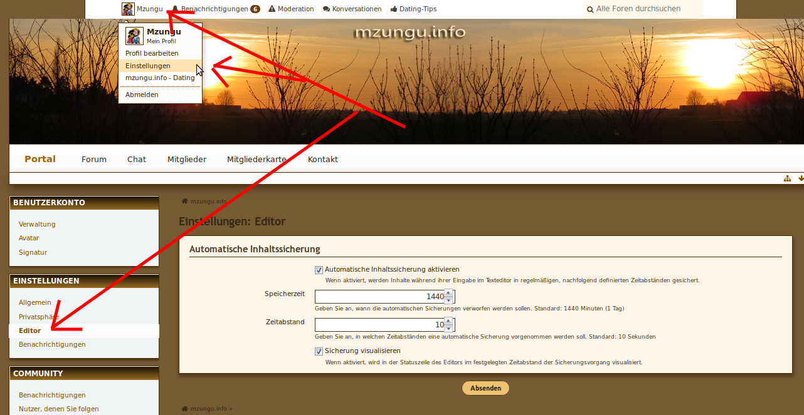

Ich hatte schon einen längeren Betrag geschrieben, aber nach dessen Absenden war er einfach weg. Hatte ihn leider nicht gespeichert, da ich dachte solch Pannen passieren hier inzwischen nicht mehr. Schade, aber jetzt hab ich keine Lust mehr, das alles noch mal einzutippen - muß ja auch nicht sein, kann auch meine Zeit sinnvoller verbringen...
Geschriebener Beitrag nach Absenden verschwunden
-
-
-
Hi,
also das Timeout steht auf 60 Minuten, das sollte genügen.
Habe es mal auf 2 Stunden verlängert, aber ich habe das Gefühl, dass dein Problem nicht am Forum liegt.
Manche Browser lassen sich einstellen, wie lange ein Cookie Gültigkeit hat bzw. erhalten wird.
Davon abgesehen gebe ich besonders gerne Support, wenn immer gleich unfreundlich rum gebrüllt wird wie ein Kind ...
Ich kann meine Zeit auch besser nutzen ...
Wie nur Andere das schaffen, hier zu posten?
Schau mal, wie oft du Probleme hattest, die nicht an mzungu.info lagen, es wurde immer geholfen...
admin -
Hi Admin,
ich verstehe nix von Timeout und weiß auch nicht, wie lange ein Cookie haltbar ist. Ich habe auch nicht "rumgebrüllt" (wie ein Kind?!? - was soll das denn jetzt???) und unfreundlich war ich auch nicht, war zumindest nicht meine Absicht!
Aber vielleicht kannst Du verstehen, daß ich verärgert war nach all der unnützen Mühe - kann sehr gut sein, daß ich länger als eine Stunde geschrieben hatte. Ich hab nicht auf die Uhr gesehen - wußte auch nicht, daß man das hier muß, weil es ein Zeitlimit für Beiträge gibt!? Das sollte einem vielleicht auch mal mitgeteilt werden, damit wären solche Ärgernisse am einfachsten zu vermeiden! Alle anderen Nutzer wissen das anscheind - aber woher nur? Naja, ich hab's ja immerhin geschafft, ein paar Beiträge erfolgreich zu posten, vielleicht waren die ja kürzer oder das "Timeout" kam damals noch später!?
Ich weiß sehr wohl, daß Du mir schon mehrmals bei Problemen geholfen hast und danke Dir auch noch mal recht herzlich für Deinen Support in diesen Fällen! Ich wollte auch nicht Deine Zeit überstrapazieren, nachdem ich ja schon meine verschwendet hatte.
Jetzt hatte ich schon wieder die Stoppuhr nicht eingeschaltet! Werde zur Sicherheit mal zwischenkopieren - wenn's wieder nicht klappt, war's natürlich meine Schuld!
m3pedro -
-
-
Hi Kamau,
vor dem Senden "strg+c" geht auch, dann ist's im Zwischenspeicher und wenn ich beim Senden aus irgend einem Grund schon abgemeldet bin, hol ich mir's halt wieder mit "strg+v" und es ist nicht verloren - hab ich früher grundsätzlich so gemacht nach schlechten Erfahrungen. Aber die gab's ja in letzter Zeit nicht mehr und so wird man halt leichtsinnig. Aber der Ärger verfliegt auch schnell wieder - und wenn man's weiß... Meinen verlorenen Beitrag könnt Ihr sicher leicht verschmerzen! -
Hi,
bei Cookies dreht es sich um eine kleine Datei, die jeweils auf dem eigenen PC temporär abgespeichert wird.
Darin stehen so einige Dinge, die dich auf der dazugehörigen Webseite identifizieren.
Aus Sicherheitsgründen haben diese Cookies nur eine gewisse Laufzeit, das steckt da dahinter.
Also mir ist das noch nie passiert, dass ich abgemeldet war, gut, ich schreibe auch die Beiträge etwas schneller
Es gibt noch andere Gründe, warum ein Cookie ungültig werden kann, privates Browser-Fenster oder speziell Kenia-User, wenn die Verbindung kurz unterbrochen wird und bei erneutem Verbinden eine neue IP vergeben wird, dann ist das zuvor bezogene Cookie ungültig.
Auch kann ein Grund dafür sein, manche User haben die Internet-Verbindung so eingestellt, dass wenn die Internetverbindung inaktiv ist, die sich automatisch trennt. Die Internetverbindung ist, wenn du einen Beitrag schreibst, nicht aktiv, weil das Formular auch temporär auf deinem PC abgespeichert ist. Klickst du dann später auf Absenden, wird die Internetverbindung wieder aktiv, aber mit einer neuen IP, bedeutet dann wie oben, dein zuvor abgespeichertes Cookie ist ungültig, somit musst du dich neu anmelden UND, klaro, der geschriebene Beitrag ist weg, ist ärgerlich, kann ich schon verstehen.
Dagegen kann ich leider nichts machen, da es praktisch nichts mit mzungu.info zu tun hat.
Irgend so etwas muss das bei dir sein @m3pedro, also bleibt dir da tatsächlich nur das Zwischenspeichern oder in einem Editor vorzubereiten, dann per Copy-Paste im Formular einfügen.
mzungu.info wird diesen Monat auf einen anderen Server kommen, dabei werden einige Dinge erneuert bzw. angepasst. Sichtbar wird es nicht sein aber eventuell spürbar, mal sehen, ob sich das Problem etwas reduziert, Cookies werden allerdings auch in der erneuerten Version Standart sein, das geht nicht anders
Gruß mzungu -
Hy,all together.
Ist mir auch schon passiert und nicht nur einmal. War sicher mein Fehler.
Aergerlich, wenn man den ganzen Roman nochmals runterholen muss.
Aber es ist so, dass die zweite Version meistens auch besser herauskommt. Und meistens auch erheblich kuerzer.
Also nicht aufgeben, sondern es halt nochmals vesuchen.
Und in der Kuerze liegt die Wuerze.
Good luck ! -
-
-
Hi,
ich habe hier im neuen mzungu.info eine "automatische Speicherung" eingebaut.
Das bedeutet, wenn du einen Beitrag schreibst und aus irgendwelchen Gründen ausgeloggt wirst oder dein Wlan / Internetverbindung abbricht, hast du eine Zwischenspeicherung in deinem Verlauf deines Browsers.
Wenn du nun wieder einlogst und weiter Schreiben willst, wird dir der letzte Zwischenspeicher angezeigt, den du dann auswählen kannst
Einstellungen für die automatische Speicherung findest du in deinen EInstellungen, siehe Bild:

Ich glaube, das macht, speziell für unsere in Afrika ansässigen Mzungus, sicher Sinn und hoffentlich auch hilfreich.
Wie verlässlich das Tool nun arbeitet, kann ich nicht pauschal sagen, bei mir klappt es. Es kommt auch auf Browser-Einstellungen, Sicherheitseinstelllungen des Browsers etc. an.
Lob und Kritik dürft Ihr gerne hier los werden.
Viel Spaß damit.
gruß mzungu -
-
Teilen
- Facebook 0
- Twitter 0
- Google Plus 0
-
 Reddit
0
Reddit
0